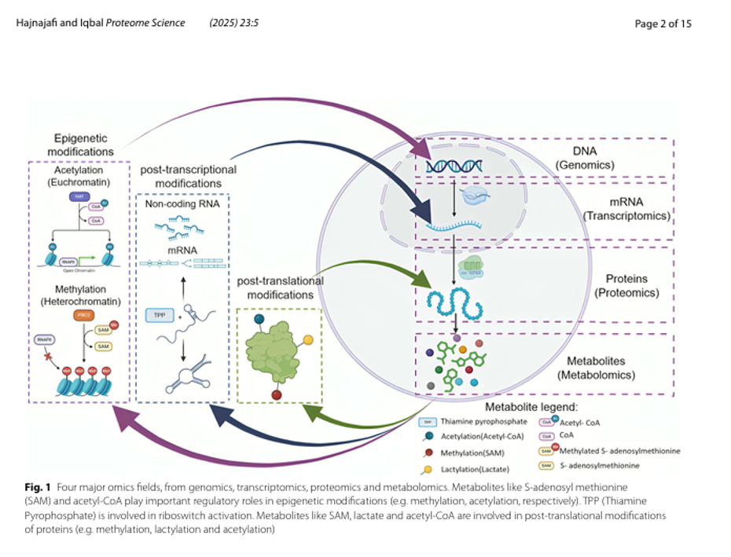
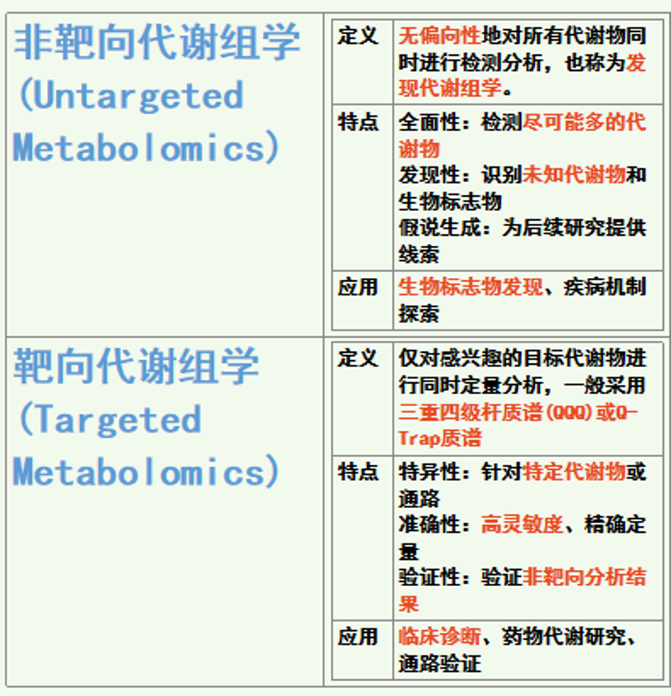
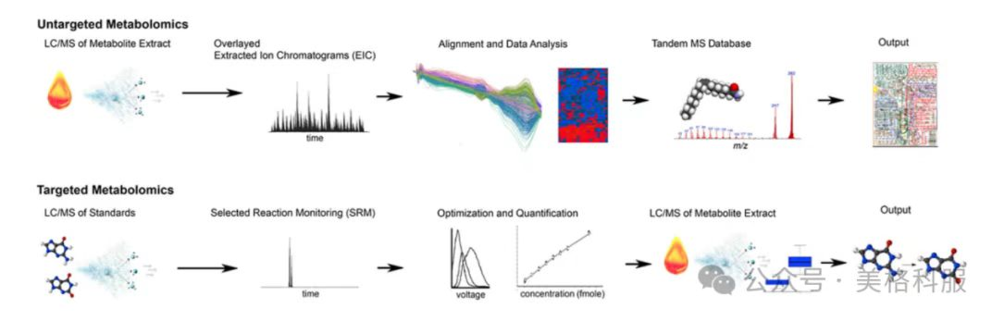

代谢组学概述
代谢组学是系统生物学的重要组成部分，专注于研究生物体内所有小分子代谢物（通常分子量小于1500Da)的组成、含量及其动态变化。它处于基因调控网络和蛋白质作用网络的下游，提供生物系统的“终端信息”，能直接反映生物体的生理病理状态。

Hajnajafi and Iqbal Proteome Science (2025) 23:5
明确科学问题：实验设计始于明确研究的科学问题及目标代谢物，这直接决定了后续技术路径的选择，先进行非靶向代谢组学分析以发现潜在生物标志物，再通过靶向代谢组学对关键代谢物进行验证和精确定量。

基于LC-MS的靶向性以及非靶向性代谢组学工作流程